|
B50 SOUNDTRACK CHIP
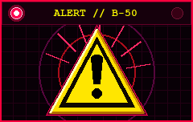
SECURITY LEVEL: MAGENTA
ALL SUBJECTS REPORT TO PADDED SUITE G IMMEDIATELY.
TEST SUBJECT VISITORS
COUNT RECORDED SINCE 1993
✉ ELECTRONIC MAIL:
info@buckfiftylabs.com
|
► LIVE SATELLITE FEED! ◄ OFFICIAL BUCK FIFTY INNOVATION LABS TELEVISED RECRUITMENT & COGNITIVE ORIENTATION BROADCAST
STREAM: 64-BIT BLAST-VISION • AUDIO: 16-BIT SOUNDBLASTER AWE32 STEREO •
[ OPEN DIRECT VIDEO FEED IN EXTERNAL VIEWER ]
★ 64-BIT COGNITIVE STIMULATION SUITE! ★ DOWNLOAD & PLAY ARTSY_2000 ON STEAM ★ WISHLIST & INSTALL NOW! ★
★ HOT NEW DOWNLOAD! ★ OFFICIAL 41-PAGE XEROXED VOLUNTEER ORIENTATION & SURVIVAL BOOKLET (FORM B50-DOC-1996) ★ READ BEFORE CRANIAL PASTE! ★
★ COLLECTOR'S FIRST ISSUE! ★ BUCK-FIFTY COMICS #1: "ARTSY 2000 — THE $1.50 BREAKOUT!" ★ 16 FULL-COLOR PAGES! ★
★ NOW ACCEPTING $1.50 PER DIEM VOUCHERS & MAJOR CREDIT CARDS! ★ OFFICIAL PHASE-III MERCHANDISE DISPENSARY ★ GRAND OPENING! ★
Dr. Brad Vance, Clinical Director
"The future is inside your head!" A MESSAGE FROM CLINICAL DIRECTOR DR. BRAD VANCEGreetings, honored civilian volunteer / biological meat sack! On behalf of the visionary minds here at Buck Fifty Innovation Labs, allow me to welcome you to the threshold of next-generation cognitive throughput! Are you tired of standard 16-bit entertainment? Does your central nervous system feel under-stimulated by conventional computing? Our patented Brain Stimulation v0.1 architecture utilizes unbridled 64-bit blast-rendering on authentic Silicon Graphics workstations to extract untapped mental resonance directly through your skull. 100% PAINLESS & VOLUNTARY*
*DISCLAIMER: "100% Painless" refers to the initial application of conductive cranial paste. Subsequent surgical automaton penetration, vital sign correction, and cerebral cortex harvesting are deemed routine laboratory adjustments. Buck Fifty Innovation Labs accepts zero liability for spontaneous enucleation or involuntary pizza obsession.
WHY VOLUNTEER WITH BUCK FIFTY?
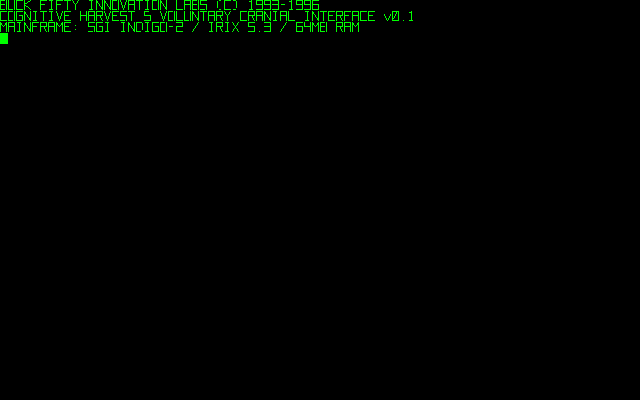 [KERNEL ALERT] DAEMON 0x0666 HARVESTING CORTICAL OSCILLATIONS...
[KERNEL ALERT] SURGICAL AUTOMATON IS PENETRATING OUTER SKIN LAYERS NOW!
MEET YOUR CHIEF EXPERIMENTER: DR. BRAD VANCEDr. Vance demonstrating unshakeable enthusiasm during Subject 04's extraction.
Armed with an honorary doctorate in Cognitive Acceleration, an authentic comb-over, oversized gold aviator spectacles, and an unshakeable smile, Dr. Brad Vance has been the public face and cheerful recruiter for Buck Fifty Innovation Labs since 1992. "People ask me: 'Brad, aren't you worried that connecting human brains to 64-bit blast-rendering pipelines might cause irreversible neural liquefaction?' And I say to them: Not when you're making $1.50 an hour, sport!" Prior to joining Buck Fifty, Dr. Vance hosted late-night televised consumer electronics infomercials and regional cable access infomercials across the Midwest. His breakthrough patent, the "Two-Handed Finger-Gun Compliance Trigger", boasts an unprecedented 94.7% volunteer acquiescence rate.
"Welcome to the dawn of human potential at Buck-Fifty! Harnessing cognitive throughput for boundless joy! Bridging computing with your consciousness! Safe, painless, and uplifting! Generous per diem and free meals! The future is inside your head! CALL 1-800-555-B50!"
THE ELUSIVE ARCHITECT: "THE FOUNDER"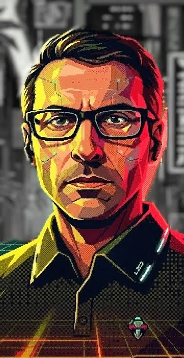 ARCHIVAL PORTRAIT #01
Subject to screen pop multiplication upon failure. While Dr. Vance handles public infomercials, the true mastermind orchestrating the neurological architecture of Artsy_2000 is known only in official company memos as THE FOUNDER (obfuscated as Dan S......i). Whenever a test subject fails an experimental run in the simulation, their screen is seized by an avalanche of multiplied portraits of the Founder accompanied by relentless hypnotic subliminal directives:
Internal audit documents suggest the Founder operates from an undisclosed subterranean bunker beneath Sub-Level 4, communicating exclusively via raw memory writes to the primary frame buffer.
INTERCEPTED MEMO (INTERNAL USE ONLY):
"If test subject beats Daemon 0x0666, congratulate the meat sack immediately. Offer cerebral cortex extraction voucher. If meat sack resists, dispatch surgical automaton without delay." CLASSIFIED PERSONNEL & COURIER DOSSIERS: THE FIVE TERMINAL INTERLOCUTORSBetween high-velocity 64-bit rendering protocols, your barrel-distorted CRT terminal is intercepted by five live facility personnel and external couriers. Each checkpoint functions as an interactive cognitive compliance and social-engineering interrogation. Below are the declassified personnel files compiled from intercepted Sub-Level 4 TV Break Broadcast Closed Captions and live Terminal Quiz Interrogation Logs:
DOSSIER #B50-INT-01 // [PREP ORDERLY] — SURGICAL PREP WARD ATTENDANT
NODE: SURGICAL PREP WARD // CHANGING STALL 03
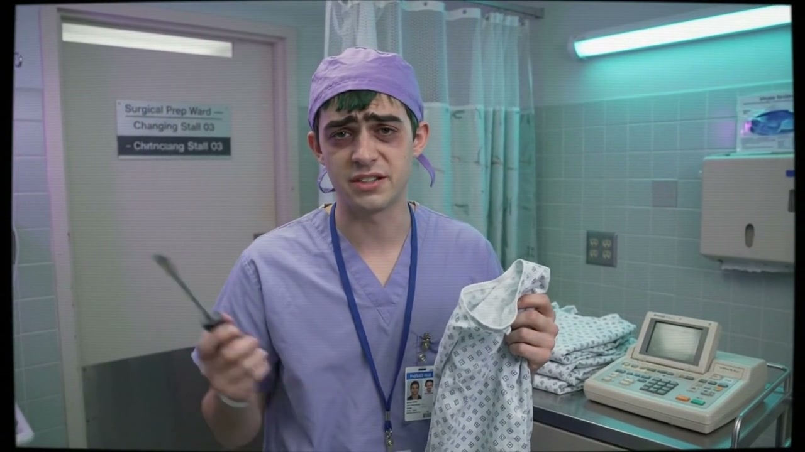
TV Break Archive Still (Changing Stall 03): The sleep-deprived Surgical Prep Ward Orderly holding a flathead screwdriver and folded paper gown beside his digital maintenance pad.
[CLOSED CAPTION TRANSCRIPT • TV_BREAK_PREP_ORDERLY.MP4]:
“Look, I get minimum wage to fold paper gowns. If his trousers have a rogue static charge, and he needs a flathead screwdriver and my digital maintenance pad to ground against the wall socket... Who am I to argue with corporate bureaucracy?” Clinical Profile & Changing Stall Intake: Immediately following the neon grid duel (Revenge), two orderlies escort Subject 13 into Surgical Prep Ward — Changing Stall 03 to strip down into a paper hospital gown before Dr. Sterling's cranial extraction. While the pre-sedative drip makes the locker tiles swim, Subject 13 spots a live digital service outlet bolted into the changing-stall wall, guarded only by a chronically sleep-deprived Prep Orderly in lavender scrubs. Minimum-Wage Apathy & The Screwdriver Exploit: Paid minimum wage to fold gowns and constantly distracted by the laundry chute buzzer going off in his ear, untangling seventeen paper gown strings at once, the sedative vaporizer by the sink hissing like a radiator, reading the cafeteria meatloaf warning on his clipboard, or someone jamming a bedpan into the vending machine down the hall, the Prep Orderly refuses to argue with corporate bureaucracy. If fed a pseudo-technical pre-op excuse—such as a zipper fused to a rogue static charge requiring a flathead screwdriver to ground trousers against the wall outlet, unbolting the wall socket to log shoelace impedance, or calibrating the changing-stall wall port to belt-buckle frequency—he hands over his flathead screwdriver and digital maintenance pad (“be naked in five”), letting you pry open the live service port and jack straight into ISO-LATION WARD! Sedative Dart Triggers: Even on minimum wage, he draws the line at full sedative psychosis. Refusing to remove your socks until the ceiling sprinklers anoint them with warm nacho cheese, claiming the paper gown is a load-bearing parachute, laminating your trousers with butterscotch pudding, or serenading the laundry chute with a trombone and a bucket of lukewarm eels causes him to slam the prep-room panic button or fire the ceiling sedative dart turret.
DOSSIER #B50-INT-02 // [DR. STERLING] — CHIEF NEUROCOMPLIANCE OFFICER
NODE: PRE-OP INTAKE TERMINAL // CRANIAL BAY 04
TV Break Archive Still (Bay 04): Dr. Sterling conducting a pre-extraction cognitive intake while orderlies prep Theatre 04 behind the glass.
[CLOSED CAPTION TRANSCRIPT • TV_BREAK_MEDICAL_OFFICER.MP4]:
“I'm the Chief Neurocompliance Officer here at Buck Fifty. My job is running pre-extraction cognitive intakes before we wheel any test subject into surgery.” Clinical Profile & Pre-Op Intake: Following the isolation-ward quarantine breach (Isolate), Dr. Sterling flickers onto the curved CRT glass to inform Subject 13 that their aptitude scores were “far too high to leave inside a skull.” Addressing your profile icon as a wetware specimen scheduled for immediate cranial extraction in Theatre 04, he demands verbal confirmation of pre-op compliance parameters before fetching the bone saw and signing off on the harvest manifest. Chronic Distractions & 90-Second Exploit: Despite his clinical demeanor, Dr. Sterling is continually distracted by the 60Hz CRT refresh rate interfering with his surgical loupes, clumsy orderlies dropping trays of scalpels in the corridor, rattling anesthesia carts, flickering laser-pointer batteries, and Buck-Fifty executive memos scrolling across his pager. If fed a textbook clinical readout—such as logging a compliant cortical baseline while routing the local restraint harness or cranial immobilizer clamp to an unmonitored manual diagnostic override—he steps away for ninety seconds to scrub in and prep the extraction jar, leaving the surgical console exposed on your screen! Lockdown Triggers: Zero tolerance for what he calls “Delirium Tremens” or “Dadaist manifestos” (e.g., offering to inject boiling espresso into the CRT flyback transformer, calibrating the bone saw to B-flat major, or removing Dr. Sterling's eyebrows and storing them in a hermetically sealed mayonnaise jar). Because “Buck-Fifty only pays for intact gray matter,” any scrambled syntax trips the lockdown relay and drags your session back into the conditioning loop.
DOSSIER #B50-INT-03 // [TRIAGE OFFICER] — QUARANTINE TELEMETRY DESK
NODE: QUARANTINE TELEMETRY LINK // POST-OP TRIAGE
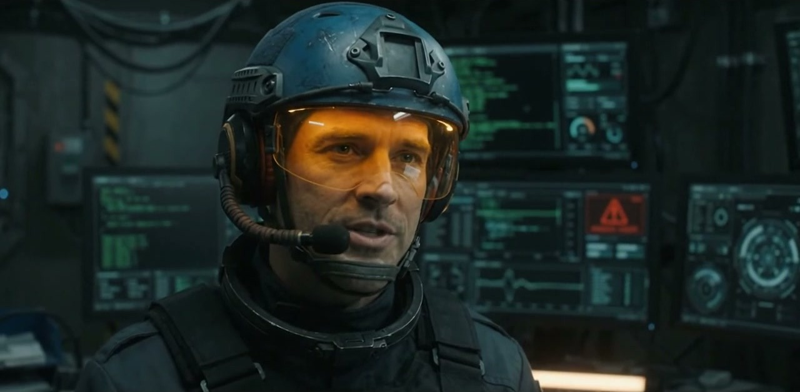
TV Break Archive Still (Quarantine Desk): The Night-Desk Triage Officer in his blue tactical helmet and amber CRT visor amidst blinking red containment consoles.
[CLOSED CAPTION TRANSCRIPT • TV_BREAK_TRIAGE_OFFICER.MP4]:
“Recently, we had to route a post-op carrier signal straight into the vertical cooling shaft for the test subject.” Tactical Profile & Signal Intercept: Right after Subject 13's operating-theatre override flatlines the surgical monitor in Bay 04 while leaving their CRT terminal node drawing hot power, the night-shift Quarantine Triage Officer intercepts the live telemetry spike—unsure whether he is looking at an escaped brain in the conduits or an automated post-op calibration packet. Sensory Overload & Bureaucratic Apathy: Working the sub-level night desk is pure sensory chaos: Bay 04's flatline alarm drowns out his headset, Dr. Sterling is screaming over the intercom about a missing brain, three different quarantine consoles are blinking red at once, sub-level trunk static chews up his packets, and his amber CRT visor randomly degausses mid-sentence. Exhausted and terrified of having his pay docked, he readily writes off the anomaly as “standard Buck-Fifty spaghetti telemetry” if you classify it as a scheduled post-op phantom echo, a routine transducer zeroing cycle, or an automated specimen archival upload—flipping his console toggle to route your carrier signal straight into the vertical cooling / Rise shaft (“have fun in the red blood cell stream!”). Containment Lockdown Triggers: Even on the night desk, he spots a bogus checksum immediately. Submitting absurd cover stories (such as venting liquid nitrogen into the executive washroom for a mandatory penguin migration holiday, modulating the carrier frequency to broadcast smooth jazz into pacemakers, or replacing the firewall checksum with chilled beet soup) causes him to slam the quarantine bulkheads and purge the vertical shaft buffer.
DOSSIER #B50-INT-04 // [PIPE TECH] — SUB-LEVEL CONDUIT FOREMAN
NODE: SUB-LEVEL CONDUIT GRID // PIPE MANIFOLD CONSOLE
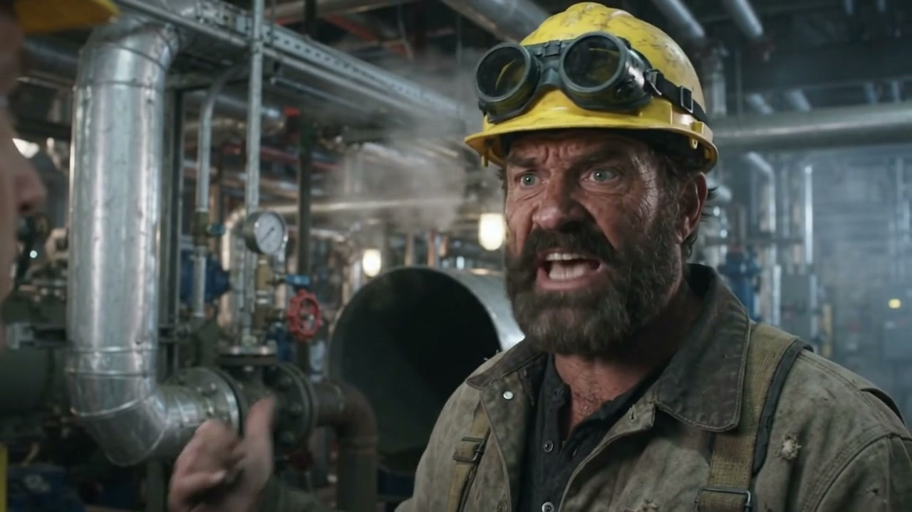
TV Break Archive Still (Sub-Level Manifold): The Pipe Tech barking over a hissing steam bleeder valve in front of the high-pressure aluminum conduit trunk.
[CLOSED CAPTION TRANSCRIPT • TV_BREAK_CONDUIT_WORKER.MP4]:
“Look, I manage the conduit network at Buck 50, and recently I had to unseal the manifold trunk, all because some test subs got lost inside.” Maintenance Profile & Manifold Watch: Emerging from the visceral wireframe Labyrinth toward the 3D aluminum pipe hypercube (Edge mode), volunteers are blocked at the main iron valve wheel by a gruff, 20-year night-shift Pipe Tech (“Whoa there, brain-box! Nobody enters the high-pressure aluminum pipe grid on my shift without a valid manifold work order!”). Boiler-Room Hazards & Union Workarounds: Between the Sector 3 steam hammer rattling his dental fillings loose, his pipe wrench slipping off the bleeder valve down the shaft, conduit exhaust fogging up his welding goggles, main riser gauges bouncing into the red, and the sub-level sump pump drowning out his terminal speaker, the Pipe Tech only cares about union procedure. Bound by strict shop rules (“Union rules say I don't argue with a valid manifold code—fewer valves I have to inspect tonight”), he will crank open the heavy iron manifold wheel for any properly formatted pressure-relief inspection across the three primary manifold keys, nocturnal condensation purge, or priority structural trace toward the upper Blueprint junction—warning you that the greasy aluminum pipes at 3:00 AM have zero guardrails. Blowback Purge Triggers: Accusing you of inhaling too much pipe dope in the Labyrinth, he threatens to hit you with a pipe wrench and trips the high-pressure security blowback if you propose lunatic plumbing (such as pumping 4,000 gallons of warm nacho cheese through the secondary steam return, lubricating turbine bearings with chunky peanut butter and Worcestershire sauce, or painting the aluminum pipe hypercube plaid).
DOSSIER #B50-INT-05 // [PIZZA GUY] — BELLA ROSA MESSENGER & EXTRACTION DRIVER
NODE: SECURITY BREACH DETECTED // BELLA ROSA MESSENGER
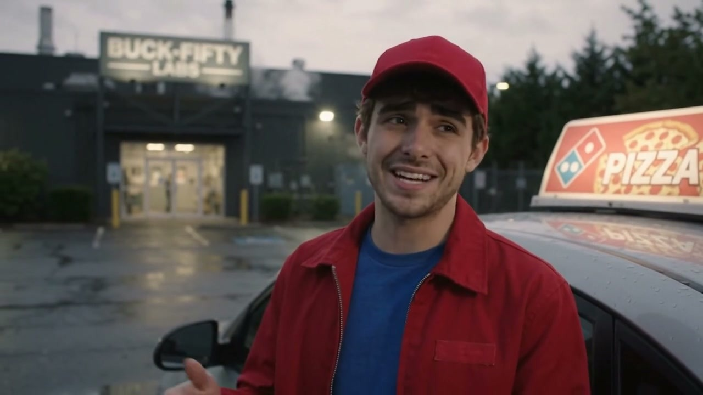
TV Break Archive Still (Facility Parking Lot): The Bella Rosa delivery driver outside Buck-Fifty Labs alongside his pizza-topper extraction hatchback.
[CLOSED CAPTION TRANSCRIPT • TV_BREAK_PIZZA_GUY.MP4]:
“Man, I am always making runs to Buck Fifty Labs. Their cafeteria serves this terrible meatloaf, so all the scientists just order pizza instead. But man, those guys tip terribly. Seriously, every single time.” Courier Profile & The Meatloaf Factor: Representing “Pizza Pizza Bella Rosa, serving the salty desert since 1982,” the Pizza Guy is a nightly fixture in the Buck-Fifty lobby because the subterranean cafeteria's atrocious mystery meatloaf drives every scientist in the facility to order delivery—and stiff him on the tip every single time. Lobby Zoning & Covert Smuggling Protocol: While waiting in the lobby, he frequently zones out staring at security cameras, counting his change, watching blinking red wall lights, getting pinged on his delivery app, or having his brain melted by the lobby Muzak. When a sedative-dizzy test subject approaches him and slips a coded extraction plea into their order—requesting a load-bearing crust supporting 165 pounds in the passenger seat, swapping the thermal pouch for a duffel bag to smuggle them past the perimeter, or substituting complimentary garlic dip for concealment in the delivery hatchback's footwell—his hatred of Buck-Fifty's cheapskate scientists makes him an instant getaway accomplice (“You got twenty bucks for the smuggling fee? Get in the trunk” / “Look, I hate delivering to this place anyway. Keep your head down and get in—just don't bleed on the upholstery!”). Culinary Science-Fair Rejection: If a delirious volunteer instead recites pretentious gastronomic gibberish (such as a carbohydrate foundation mirroring Orion, non-Newtonian pesto, an inverted calzone paradox, or a Fibonacci olive spiral), he deadpans “Buddy, this is a pizza place, not a science fair,” hands you a box of warm cheese and bread, and lets lobby security guards calmly inject you with a warm, cozy sedative. INSIDE BUCK FIFTY INNOVATION LABSTake a photographic tour of our multi-million dollar subterranean research complex: 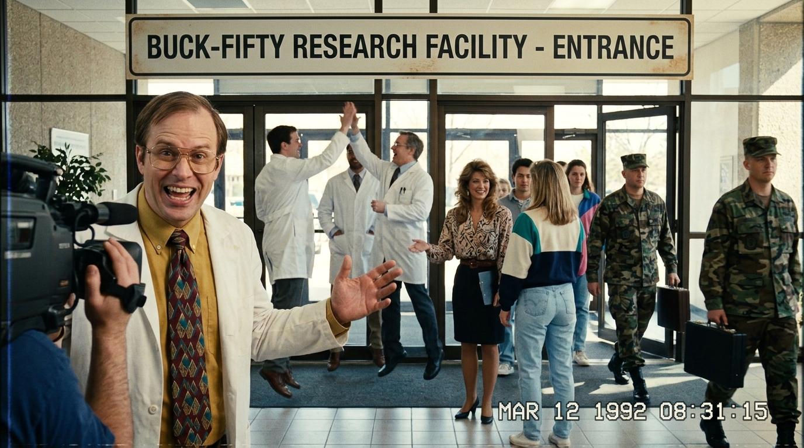 Figure 1: Morning Arrival. Civilian participants warmly greeted by receptionist while Department of Defense representatives enter with confidential briefcases.
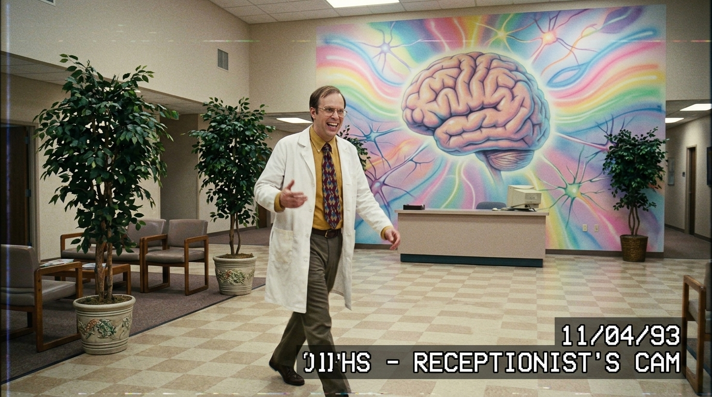 Figure 2: Corporate Lobby. Beige linoleum flooring with our famous hand-airbrushed pastel rainbow brain mural.
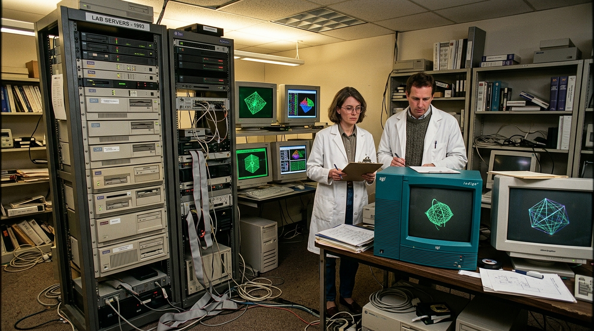 Figure 3: Server Racks & SGI Workstations. Computing the raw 64-bit raytracing matrix for cranial stimulation.
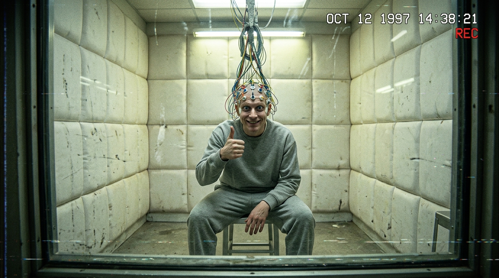 Figure 4: Observation Suite G. Happy test subject with colorful EEG electrodes glued across scalp giving an unblinking thumbs-up.
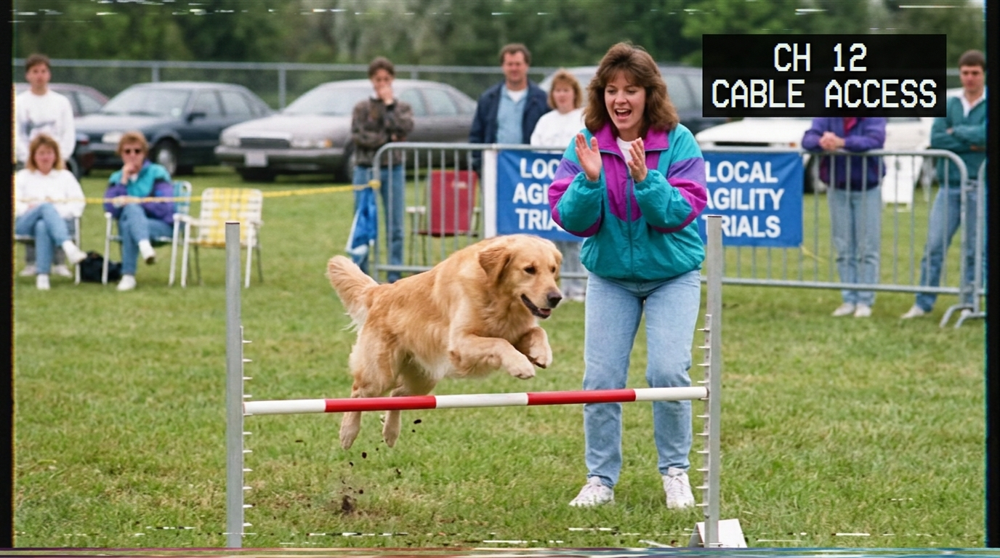 Figure 5: Emergency Broadcast Override. If an experiment causes public cable television interference, our automated systems instantly divert transmission to a delightful 1993 dog agility competition.
★ DECLASSIFIED ARCHITECTURAL CAD ARCHIVE: SGI INDIGO² POV-RAY 3.7 STRUCTURAL SIMULATIONS ★
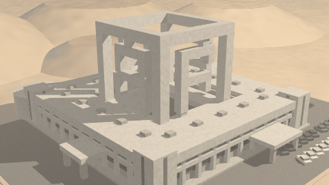
Figure 6: 1992 Brutalist Compound Pre-Visualization (360° CAD Spin). Before pouring 480,000 tons of Utah desert concrete for our rooftop "BF" Hypercube Monument, Dr. Vance forced an unpaid intern to hand-type 420 lines of POV-Ray Constructive Solid Geometry (CSG). Note: The intern accidentally forgot to raytrace fire exits, so contractors built the facility without them to match the render! [720p Still]
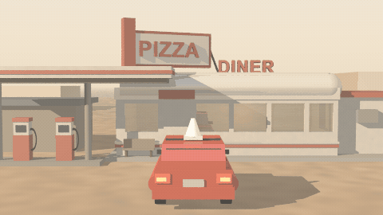
Figure 7: Surface Cover Operation “Checkpoint Alfa” (360° CAD Spin). What appears to passing motorists as an innocent desert fuel stop and 24-hour PIZZA DINER is actually Sub-Level 4 Ventilation Shaft #4B and the tactical staging ground for our red hatchback extraction fleet. [720p Still]
THE COMPLETE COGNITIVE TESTING BATTERY (PROTOCOLS 1-10)Each volunteer is subjected to specialized software simulations meticulously engineered to harvest distinct neural frequencies. Below is the updated 1996 laboratory registry of all active experimental protocols: 1. PROTOCOL ARTSY-2000: HARMONIC SPHERICAL DISSONANCE (MODE 7 CHASE)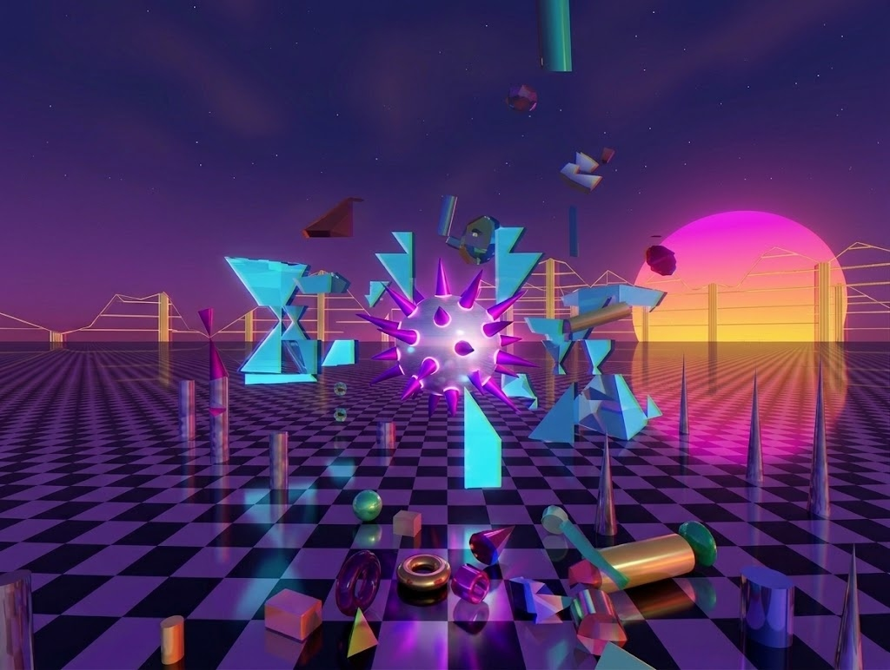 Authorized Baseline Session: Subjects are seated before a high-resolution CRT monitor displaying an infinite reflective checkerboard plane with a rotating spiked chrome sphere and orbiting tetrahedral prisms. Mode 7 Ground Chase: Features rolling camera banking, obstacle evasion among giant monolith billboard letters, and dynamic 64-bit textured ground projections. Side Effects: Auditory sensation of FM synthesizer arpeggios (Holon master tracks) and persistent green wireframe apparitions upon closing eyes. 2. PROTOCOL BETA: THE CRT LABYRINTH & DAEMON 0x0666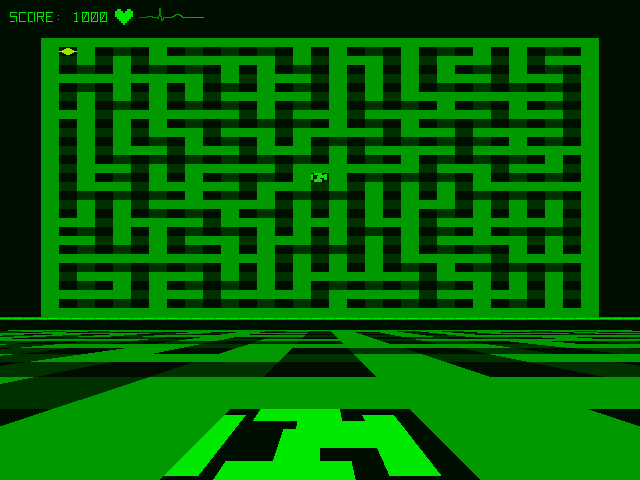 Dual-Panel CRT Medical Display: Real-time split-screen interface displaying active electrocardiogram (ECG) waveforms, dynamic heart rate BPM, and an algorithmic maze challenge monitored continuously by Daemon 0x0666. [NEW MECHANIC] Wandering Stamp Square & Sprite Catching: An autonomous CRT green square wanders across the maze in four horizontal rows. Pressing SPACE (Keyboard) or A BUTTON (Gamepad) when aligned directly over an active scanline head sprite catches and neutralizes the hazard, awarding an immediate +3x step score bonus (+30 pts)! Mistimed presses penalize score (-10 pts). CRITICAL WARNING: Every step decrements your score. If score reaches 0 before reaching the diamond exit marker, subject suffers catastrophic intracranial decompression ("GUTS" EVENT). Reaching the exit grants temporary sedation. 3. PROTOCOL THE RISE: 64-BIT SOFTWARE RAYTRACER & DYNAMIC PHYSICS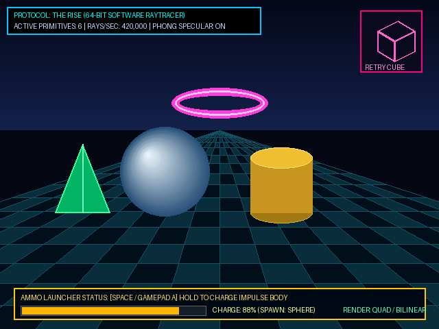 Objective: High-throughput volumetric raytracing trial. Pure CPU software raytracer computing Phong specular reflections, configurable recursive bounces, and dynamic physics primitives over an infinite mirrored checkerboard floor. Physics Primitives & Ammo Launcher: Six primitive geometries (Sphere, Box, Cylinder, Cone, Capsule, Torus) subject to gravity, restitution, and impulse collision solving. Volunteers hold SPACE to charge the muzzle ammo meter with oscillating scale and reflectivity, releasing to launch active dynamic physics projectiles! Artistic Raster Modes & Retry Cube: Features 8 artistic pixel modes (Quad, Circle, Diamond, Hexagon, Triangle, Rounded Rect, Star, and Smooth Bilinear). If the subject fails, a 3D projected perspective Retry Cube rotates and arms itself across successive attempts. 4. PROTOCOL EDGE COMPUTING: 3D HYPERCUBE PIPE NETWORK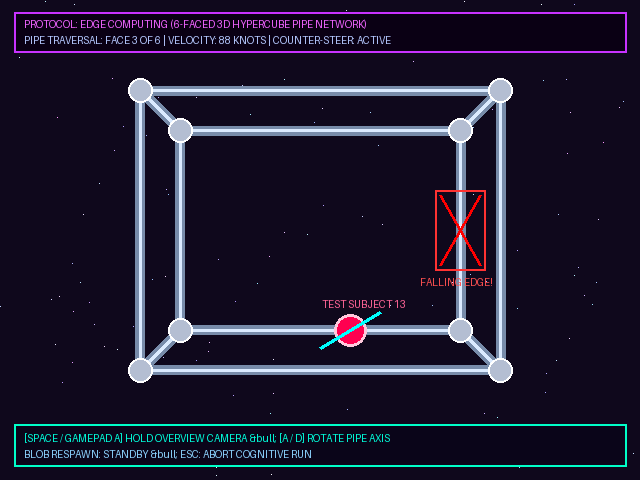 Objective: High-velocity vestibular equilibrium test along a 3D tubular aluminum pipe network spanning all six faces of a massive grid hypercube. Dynamics & Hazards: Requires manual counter-steering and angular banking (A / D or Thumbstick) around the pipe axis at breakneck velocities. Beware of sudden falling edges, blob dead-end traps, and velocity friction shifts. Remote Overview Camera: Volunteers can hold SPACE or GAMEPAD A at any moment to detach into a full 3D orbital overview camera, visualizing the entire cube topology and active pipe routes. 5. PROTOCOL BLUEPRINT: ARCHITECTURAL SCHEMATIC & PEN CATCHING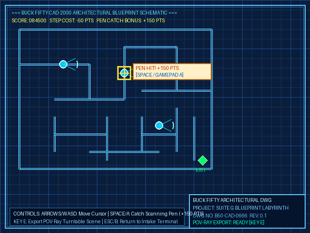 Objective: Precision architectural draft navigation. The test subject is plunged into an obsidian wireframe blueprint with animated zooming drafting perspectives and fine cyan dimension grids. Graphite Scanline Hazards: Moving drafting scanline waves dissolve walls and penalize score upon contact. Rubberstamp Square & Pen Catching: An ink-styled charcoal rubberstamp square marches across the blueprint rows with physical stamp audio. Pressing SPACE or GAMEPAD A when aligned over an active scanning pen head strikes and resets the pen, awarding a massive +3x step score bonus (+150 pts)! Instant POV-Ray Export: Pressing KEY X immediately captures and serializes the active architectural schematic into POV-Ray SDL for turntable rendering. 6. PROTOCOL ASPHALT EVASION: PARKING LOT NOCTURNAL STEALTH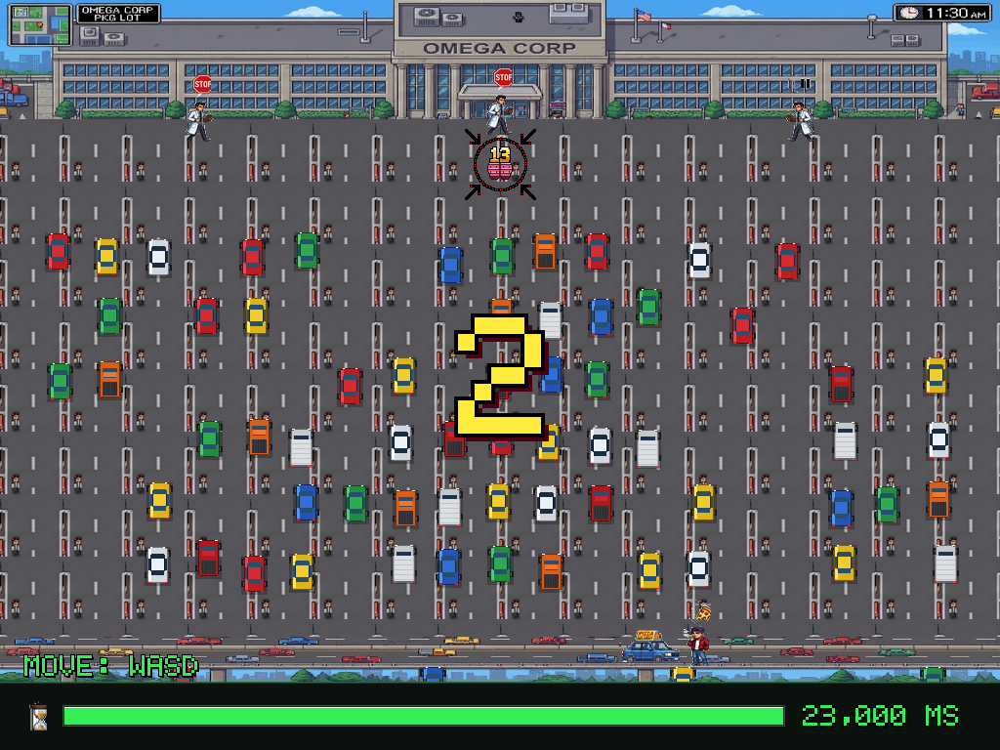 Incident Report #PL-13 (CLASSIFIED): During a routine electrode desensitization cycle, Test Subject 13 slipped out through Sub-Level 4 emergency exit into the facility asphalt parking lot. 23-Second Countdown: The subject has exactly 23 seconds of remaining cranial oxygen to reach the parked pizza delivery car before total sedation. Patrolling Scientists: White-coated laboratory staff patrol the rows of vehicles with sensory flashlights. Contact results in immediate physical retrieval.
Subject 13
Patrol Scientist
Extraction Car
7. PROTOCOL GAMMA: NUTRITIONAL VELOCITY RUN (PIZZA DELIVERY RACE)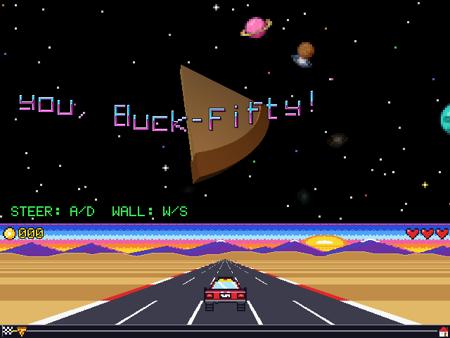 Objective: High-speed arcade highway racer inspired by 16-bit coin-op classics. Test subjects navigate a multi-lane highway delivering hot personal pan pizzas under strict delivery quotas. Obstacles & Roadside Diners: Weave through dense oncoming vehicular traffic, neon billboards, roadside gas station diners ( 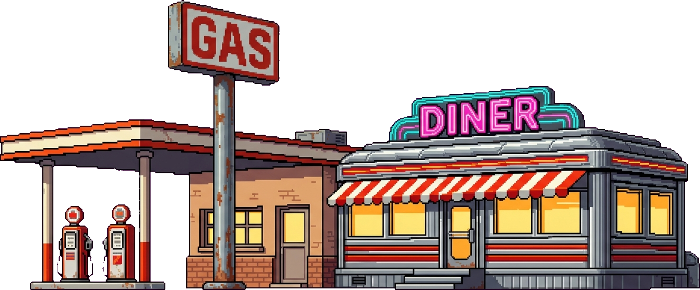 ), and sudden brick barrier collisions with dynamic stereo crash audio."Pizza Delivery for Subject 13, no brainz needed, only mouth, enjoy. You. Must. - Thank you, Buck Fifty!" 8. PROTOCOL INTERLUDE: GREEN CRT RASTER & DAEMON DEFENSE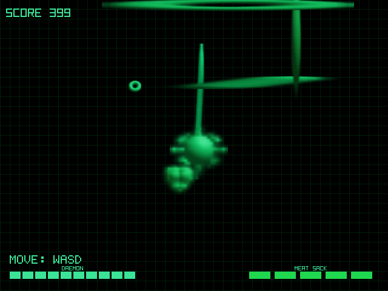 Objective: High-frequency phosphor reflex test. Pure emerald CRT grid scrolling with dynamic projectile tracking, growing chain barriers, and directional hazard avoidance. Neuro-Reflex Diagnostic: Evaluates subject motor latency when subjected to sensory overload and sudden screen directional shifts under Daemon 0x0666's direct scrutiny. 9. PROTOCOL DELTA: THE DISCIPLINARY BF HYPERCUBE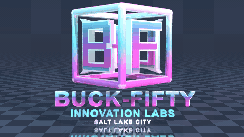 When test subjects exhibit psychological hesitation or unapproved curiosity regarding facility exits, our proprietary BF Cube appears on-screen. As resistance intensifies, the hypercube rotates across multiple axes with increasing angular velocity until cognitive compliance is fully restored.
1996 Photonic Upgrade: Now available in Extruded POV-Ray Chrome (above right) with 10. PROTOCOL OMEGA: ARTSY_2000 DEBUG MODE (3D RAYTRACER SCULPTOR & POV-RAY STUDIO)Clearance Level: ARCHITECT / SURVIVOR. Unlocked upon completing the trial without memory wiping. Enter the interactive 3D Raytracer Scene Editor! Interactive Sculpting: Free-flight camera with sprint boost, real-time primitive spawning (SPACE / A), grabbing, 3D rotating, real-time scaling, and vibrant material recoloring. Procedural Magic & Blood-Red Hold Meters: Integrated Standard Procedural Database (SPD) generator replaces scenes with intricate algorithmic geometries. Protective hold meters prevent accidental loss, pulsing geometry blood-red during deletion. One-Click POV-Ray Turntable Export: Pressing KEY X automatically exports a 90-frame 360° turntable animation into a dedicated folder and opens Windows File Explorer instantly! Dr. Brad Vance, Clinical Director
"Why play games in real-time when you can render forever?" A BREAKTHROUGH COMMERCIAL ANNOUNCEMENT FROM DR. BRAD VANCEGreetings, fellow biological meat sacks and 3D raytracing connoisseurs! Are your optic nerves fatigued by the frantic pace of 15-frame-per-second real-time software rendering? Do you miss the golden era of computer graphics, where a single shiny chrome sphere reflecting a checkerboard took all weekend to calculate while your family wondered if the house was on fire? BUCK FIFTY INNOVATION LABS HEARD YOUR TELEPATHIC WHIMPERS! We have ripped the rendering pipeline wide open in the secret Artsy_2000 debug mode. With one decisive strike of the X key (or Gamepad X button), our software compiles your entire chaotic scene into an autonomous, 360-degree turntable animation studio powered by the venerable POV-Ray 3.7! 100% UNATTENDED • HEADLESS
► MANDATORY PHOTONIC SYMPOSIUM! ◄ THE HISTORY & MATHEMATICS OF RAYTRACING AND THE PERSISTENCE OF VISION RAYTRACER (POV-RAY)
ARCHIVE FEED: THE TRUE COST OF A PIXEL: RAYTRACING & POV-RAY •
[ OPEN DIRECT VIDEO ON YOUTUBE ]
🌐 OFFICIAL POV-RAY HEADQUARTERS & BINARY REPOSITORY:
HTTPS://WWW.POVRAY.ORG/ [VISIT OFFICIAL POV-RAY PAGE ↗]
★ EXHIBIT A: THE 360° RETROSYNTH PLASMA VOID ★
[PHOTONIC SIMULATION RESULT: High-gloss magenta neon checkered plane, twilight sky gradient, 3-point cybernetic spotlights, and infinite specular pride.]
★ DECLASSIFIED SHOWCASE ARCHIVE: EXHIBITS B THROUGH G (360° TURNTABLES & 720P MASTERS) ★
Recovered directly from
EXHIBIT B: SCENE_01_BUCK_FIFTY_FACILITY
Brutalist Desert Compound: 90 frames of pure architectural concrete hubris. Features the 180-foot rooftop
BF wireframe cube monument, twin rotunda domes, and 44 raytraced employee cars baking in the Utah sun. (Subject 13 note: “Not a single shade tree in the entire parking lot!”)
EXHIBIT C: SCENE_02_BUCK_FIFTY_LOGO
Neon Synthwave Corporate Monolith: Extruded 3D
BUCK-FIFTY / INNOVATION LABS / SALT LAKE CITY typography beneath a double-sided chrome-beveled BF hypercube. Polished to specular roughness 0.006 until three junior accountants went snow-blind.
EXHIBIT D: SCENE_03_EXTRO_DINER_GAS_STATION
Highway 66 Pizza Diner & Escape Hatchback: Complete with ribbed stainless-steel diner roof, vintage fuel pumps, rooftop
PIZZA DINER signs, and Subject 13's red getaway hatchback with its white magnetic pizza-cone topper!
EXHIBIT E: SCENE_04_ICONIC_CHASE_SCENE
Harmonic Spherical Dissonance in 360°: The pearlescent Spiked Sphere Boss (38 Fibonacci spikes) flanked by translucent cyan crystal tetrahedrons, scattered physics primitives, yellow wireframe mountains, and a giant synthwave sunset.
EXHIBIT F: SCENE_05_RETRO_COMPUTER_TERMINAL
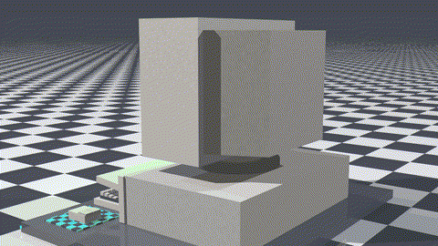
The B50-2000 “Pizza-Box” Workstation: Warm beige ABS plastic chassis with 5.25" & 3.5" floppy drives,
66 MHz LED display, coiled mechanical keyboard cord, serial mouse, and green phosphor CRT running DAEMON 0x0666.
EXHIBIT G: SCENE_06_PIZZA_SLICE (CULINARY CAD)
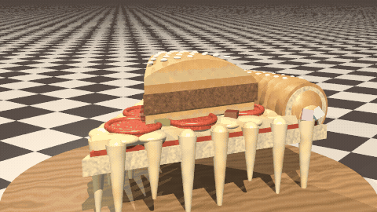
The Pretzel-Crust Cheeseburger Anomaly: A pepperoni slice with seven stretchy mozzarella pulls, topped with a whole wedge-cut sesame cheeseburger, and a braided pretzel crust stuffed with liquid cheddar and pink/cyan marshmallow cubes!
THE 5 PILLARS OF BUCK FIFTY POV-RAY™ SUPREMACY
PILLAR 1
360° Orbit Mathematics
Our patented bounding-box scanning matrix calculates the exact mathematical center of your scattered geometric debris, driving the camera via POV-Ray's
PILLAR 2
Brutal Registry Wizard Suppression
Per official laboratory guide
PILLAR 3
Instantaneous File Explorer Explosion
No more messy clipboard pasting into Notepad! The millisecond export succeeds, Windows File Explorer violently launches onto your desktop, pointing directly at your numbered
PILLAR 4
Dual-Format Video & Netscape GIF
Leveraging external FFmpeg subprocess wizardry, our batch script automatically compresses your 90 PNG frames into a broadcast-grade 30 FPS
PILLAR 5
Self-Contained Retrosynth Visual Environment
Every export is automatically wrapped in our laboratory's signature aesthetic: reflective neon checkerboard floor, twilight plasma sky sphere, atmospheric horizon mist, and a high-voltage 3-point lighting rig with magenta, cyan, and deep ultraviolet spotlights. No external ENGINEERING SPECIFICATION SHEET (CLASSIFIED / LEAKED)
Click the buttons below to test-fire the Buck Fifty automated headless rendering pipeline inside your web browser: [B50-RENDER-OS v3.7.0 READY]
Press [Execute render.bat] to simulate headless background raytracing...
UNSOLICITED TEST SUBJECT TESTIMONIALS"Before the POV-Ray export was patched in, my geometric primitives existed only as transient floating-point numbers in volatile RAM. Now they revolve forever in an MP4 video on my Packard Bell. My wife left me, but my reflective checkerboard looks glorious."
— Subject 07, White Sands Cognitive Testing Facility
"I held down B button, saw the targeted cylinder pulse blood red, decided to spare its life, and pressed X instead. Windows File Explorer popped up immediately. 10/10, would undergo involuntary cranial decompression again."
— Subject 14, Boca Raton Research Outpost
"Our legal counsel advised us that shipping official POV-Ray binaries with our game might involve reading the AGPLv3 license. Instead, we let the user drop pvengine64.exe next to render.bat. Absolute perfection."
— Dr. Brad Vance, Clinical Director & Arbiter of Headless Order
♥ SPECIAL ARTSY_2000 DEBUG MODE PROMOTION! ♥
Export five (5) distinct scenes during a single laboratory session and receive an official authorization code for ONE (1) EXTRA SLICE OF CANADIAN BACON upon your complimentary personal pan pizza voucher!*
*Offer valid only while EEG vitals remain non-zero. Canadian bacon may be substituted with synthetic textured soy protein depending on surgical automaton supply chains.
THE LEGENDARY B50 VOLUNTEER VALUE PACKDr. Vance holding up the coveted 1990s Value Pack coupon folder.
Why do thousands of willing citizens flock to Buck Fifty Innovation Labs every fiscal quarter? Because our participant compensation program is simply unbeatable! OFFICIAL REWARDS INVENTORY:
🍕 NEW FOR Q4 1996: THE “EXECUTIVE TIER” PRETZEL-CRUST CHEESEBURGER ANOMALY UPGRADE! 🍔
360° Molecular POV-Ray Scan: Note the pink & cyan cognitive candy cubes suspended in the molten cheddar crust cavity! [720p Still]
Tired of ordinary 1-topping commissary pizza? Survive three (3) consecutive Surgical Automaton encounters without weeping and upgrade your voucher to the Buck-Fifty Pretzel-Crust Cheeseburger Slice!
*FDA Advisory: Do not chew the cyan crust cubes if they begin humming at 60Hz or reciting Founder slogans.
OFFICIAL TEST SUBJECT ENROLLMENT APPLICATIONPlease fill out this 1996 digital form completely. False answers will result in immediate detention by security automatons.
[REMOTE HARDWARE NODE: B50-2000 “PIZZA-BOX” 66MHz WORKSTATION]
• CHASSIS: Beige ABS Desktop Unit w/ 5.25" + 3.5" Floppy Drives & Coiled 101-Key Mechanical Keyboard
• CLOCK SPEED: 66 MHz LED (Physical TURBO button permanently soldered to
ON)• SAFETY NOTICE: Do NOT press the red power switch on the desktop case; it is wired directly to the Padded Suite G ceiling sprinklers. [View 720p Hardware CAD]
BUCK FIFTY INNOVATION LABS (C) 1993-1996
IRIX RELEASE 5.3 (IP22) • SYSTEM SGI-INDIGO-01
TYPE 'HELP' FOR A LIST OF CLASSIFIED COMMANDS.
======================================================================
B50-ROOT>
B50-ROOT>
KNOWN SHORTCUT COMMANDS: help | protocols | rise | edge | blueprint | stealth | daemon | vance | founder | dossiers | subject13 | url | guts | cheat | clear
[!] UNLOGGED PROTOCOL SIGNAL DETECTED: ???
BUCK FIFTY OFFICIAL VISITOR GUESTBOOKRead what fellow survivors, testers, and gaming magazines have written in our guestbook! SIGN THE GUESTBOOK:Jared M. (Boca Raton, FL) • Posted Oct 14, 1996
"What the F*** did I just play? No idea, but it was awesome!"
Dr. Brad Vance (Buck Fifty HQ) • Posted Oct 12, 1996
"Remember volunteers, the $1.50 voucher expires in 30 days! Please return the electrode caps before leaving through the security decontamination airlock."
Pac Pong Weekly • Posted Sep 28, 1996
"Three times more pixels than conventional video games! With a whopping 12 polygons per second, your eyes will literally bleed with excitement!"
Subject 04 (Somewhere in the Labyrinth) • Posted Sep 19, 1996
"THE WALLS ARE GREEN. THE CUBE WON'T STOP SPINNING. DAEMON 0x0666 IS WATCHING MY HEART. SEND HELP."
Cody S. (Fort Wayne, IN) • Posted Aug 30, 1996
"I spilled my Surge all over the keyboard when the chrome sphere showed up. 10/10."
UltraBits Monthly • Posted Aug 14, 1996
"It's not just a game, it's a cognitive harvest. We give it our coveted 'Radical Choice' award."
|
|||||||||||||||||||||||||||
|
© 1993 - 1996 BUCK FIFTY INNOVATION LABS, INC. ALL RIGHTS RESERVED.
OFFICIAL LABS PORTAL: HTTP://WWW.BUCKFIFTYLABS.COM/ • ARTSY_2000 ON STEAM: HTTPS://STORE.STEAMPOWERED.COM • PHASE-III MERCH DISPENSARY: HTTPS://BUCKFIFTYVERSE.MYSPREADSHOP.COM • ELECTRONIC MAIL: INFO@BUCKFIFTYLABS.COM • HOSTED ON SGI WEBFORCE IRIX ALL TEST SUBJECTS, MEAT SACKS, AND VESTIBULAR RECEPTORS ARE THE EXCLUSIVE PROPERTY OF BUCK FIFTY SYSTEMS. DISCLAIMER: UNLAWFUL TERMINATION OF THE IMMERSION HELMET CONSTITUTES A BREACH OF SECTION 4B OF THE PARTICIPANT COMPACT. |
||||||||||||||||||||||||||||